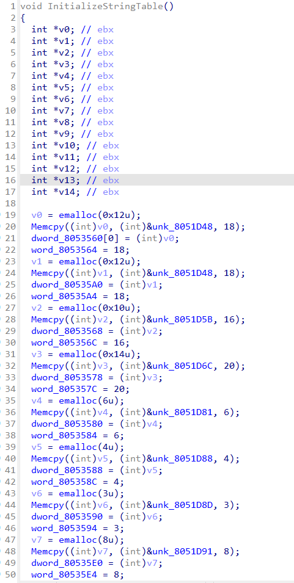
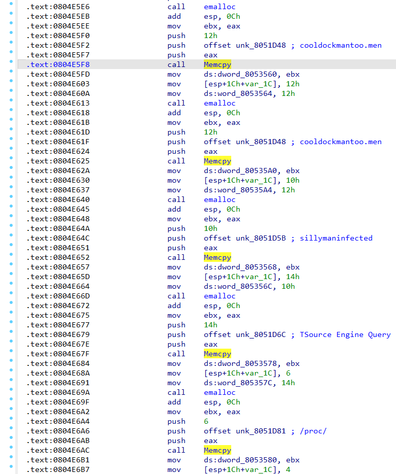

介绍
IDAPython是IDA Pro内置的一个强大工具，可以自动化处理繁琐的逆向工程任务。
IDAPython和IDC同样都是利用IDA Pro的api进行自动化操作的工具，其中IDAPython基于Python，而IDC是基于C的。
IDAPython在2004年被开发出来，其目的是取代IDA自带的idc脚本引擎，提供更强大的扩展能力和自动化分析能力。
IDAPython由三个独立的模块组成：
- 第一个是 idc，它是封装 IDA 的 IDC 函数的兼容性模块。
- 第二个模块是 idautils，这是IDA 里的一个高级实用函数。
- 第三个模块是 idaapi，它允许访问更多低级数据，这些数据能够被类使用通过 IDA。
常用函数
here() idc.get_screen_ea() //获取当前光标所在位置的地址，返回一个16进制的整型值
ida_ida.inf_get_min_ea() idc.get_inf_attr(INF_MIN_EA) //获取最小地址
ida_ida.inf_get_max_ea() idc.get_inf_attr(INF_MAX_EA) // 获取最大地址
idc.get_segm_name(here()) //获取当前段的名称
idc.GetDisasm(here()) //获取当前地址的指令
idc.print_insn_mnem(here()) //获取当前地址助记符
idc.print_operand(here(),0) //获取当前地址操作数
1
2
3
4
5
6
| idautils.Functions() //将返回一个已知函数列表
idc.get_func_name() //返回函数名称
//返回所有函数地址和函数名称
for func in idautils.Functions():
print("0x%x, %s" % (func, idc.get_func_name(func)))
|
1
2
| func=idaapi.get_func(here())
print("start:0x%x end:0x%x"%(func.start_ea,func.end_ea))
|
1
2
3
4
5
6
7
| ea=here()
start=idc.get_func_attr(ea,FUNCATTR_START)
end=idc.get_func_attr(ea,FUNCATTR_END)
cur_addr=start
while cur_addr<=end:
print(hex(cur_addr),idc.GetDisasm(cur_addr))
cur_addr=idc.next_head(cur_addr,end)
|
1
2
3
4
5
6
7
8
9
10
11
12
13
14
15
16
| import binascii
ea=here()
start=idc.get_func_attr(ea,FUNCATTR_START)
end=idc.get_func_attr(ea,FUNCATTR_END)
addr=start
while addr<=end:
if print_insn_mnem(addr) == "mov" and "esi" in print_operand(addr,0) and addr!=0x10005b8a:
#print(hex(addr),idc.GetDisasm(addr))
str_addr=get_operand_value(addr,1)
#print(hex(str_addr))
hex_str=idc.get_strlit_contents(str_addr, -1, idc.STRTYPE_C)
#print(hex_str)
string = binascii.unhexlify(hex_str).decode()
print(string)
set_cmt(addr, string, 1)
addr=idc.next_head(addr,end)
|
mirai解码字符串
以mirai为代表的IOT僵尸网络蠕虫病毒会采用XOR的方式将字符串隐写到table当中，每次使用的时候调用 table_unlock_val(uint8_t id) 函数，这样其实对分析造成了很大的麻烦，可以直接使用idapython对table中的加密数据进行解码，备注。
首先定位到table_init函数

可以看到函数对一些16进制字符进行了操作，然后从汇编代码进行分析

代码分析可以看出，push字符串后都会执行Memcpy方法，将字符串复制到新申请的内存空间中，可以通过这一特征定位到相应的位置。算法分析是异或0x3A。
1
2
3
4
5
6
7
8
9
10
11
12
13
14
15
16
17
18
19
20
21
22
23
24
25
26
27
28
29
30
31
32
33
34
35
36
37
38
39
40
41
42
43
| import idc
import idaapi
def getStrAddress(addr):
addr = prev_head(addr)
addr = prev_head(addr)
if print_insn_mnem(addr) == "push" and "offset" in print_operand(addr,0):
return get_operand_value(addr,0)
else:
return 0
def getEncodeStr(addr):
out = ""
while(True):
ch = idaapi.get_byte(addr)
if ch != 0:
out += chr(ch)
else:
break
addr += 1
return out
def getDecodeStr(str):
i = 0
out = ""
length = len(str)
while i < length:
out += chr(ord(str[i]) ^ 0x3A)
i += 1
return out
if __name__ == '__main__':
try:
for x in XrefsTo(0x0804EF40,flags = 0):
addr = getStrAddress(x.frm)
if addr !=0:
eStr = getEncodeStr(addr)
dStr = getDecodeStr(eStr)
set_cmt(prev_head(x.frm), dStr, 0)
except:
print("Error")
|
参考
https://www.yunyawu.com/2020/06/28/ida-python%e5%ad%a6%e4%b9%a0/